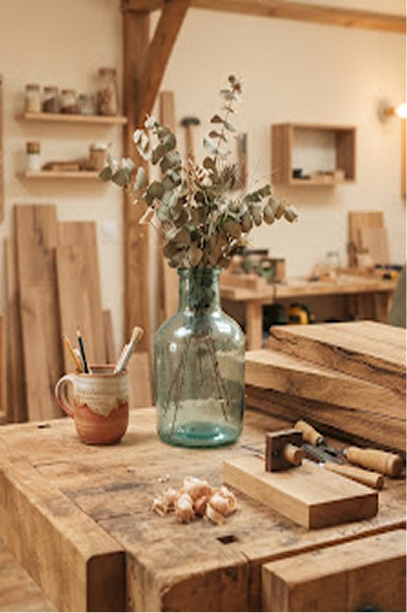

Pièce signature du mois
EcoArt relie le design contemporain à l'économie régénérative. Nous transformons les rebuts nobles — chutes de chêne séculaire, textiles dormants et verre soufflé — en objets d'exception conçus par 42 maîtres artisans.

Pièce signature du mois